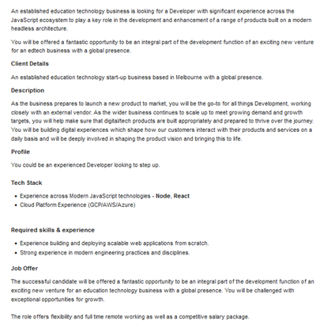
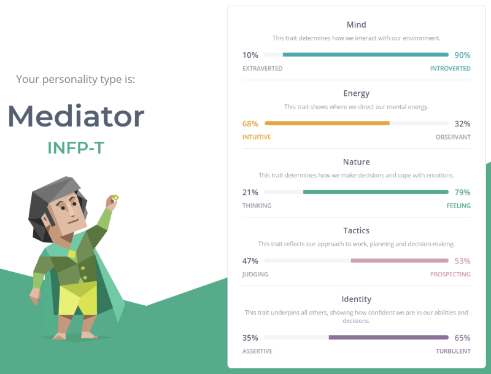

I was born in Australia and grew up in the coastal town of Coffs Harbour. My current education is a diploma in software development and have recently completed an undergraduate in Cyber Security with RMIT.
Last year I had purchased a caravan and have found that I really enjoy fixing up many problems such as removing 1980s stoves and fridges as well as replacing benches, tearing down plywood walls and installing floating floors.
Interest in IT
My Interest in IT is within the software development section I have had a keen interest since programming in QBasic in the late 90s where four of the brightest students in the class where doing amazing things with such little effort and the passion started from there.
As for another reasons for my interest in IT is that the creation of software development requires planning information and researching other information technologies or applications. The interest in IT that I have found more engaging is the programming of data inputs because the whole concept of a databases is that the information needs to be obtained and managing accordingly so this data then becomes the challenge in programming as you need to interpret this data visually as well as professionally viable.
My IT experience starts from basic to being able to build a PC and program in Java. I have coded in C#, Basic and JavaScript. I have also had a go of HTML markup language and CSS.
I Choose RMIT to further my understanding of IT and to push myself to get educated as the learning is in a remote atmosphere and due to work commitments it’s a more flexible option. I hope to learn more of how the industry works and the different paths that the IT sector is going towards as we can never be too complacent as the next new change may be Years, Months or even days away.
Ideal Job
Ideal Job is for the following Software Developer. Click the first image for the Software Developer Seek advertisment.

Description
The Job title is for a Software developer and requires someone to be able to develop technologies for the company. The appealing thing about this is that it aims at development in the education sector this is a stable environment that can adapt to change. The other thing that is appealing is that is requires a challenge to get a product to market which is always a great learning opportunity.
Skills Required
The Job requires JavaScript knowledge as the use of mainstream web assets such as Node, react being JavaScript based. The Skills also require the use of cloud-based areas of IT also a common mainstream platform. Skills in adaption to modern technologies.
Skills I Have
I have skills in project management, basic HTLM and CSS as well as Diploma in Software development and a Cert III in ICT communications.
Skills To Work On
Skills to work on is to introduce myself to Node and react as well as investing in time for researching existing technologies and their eventual evolution with the programming skills that I have. Cloud services are common but are something that can improve my knowledge of.
Personality Profile
Online tests are to be taken, and the results are as follows.
Test Result Myers-Briggs Type Indicator
Results of the test where pretty close to my personality but I feel that different times that a test where to be sat may yield slight variants in the data outcome for the test.
The result would reflect on working in a team as a quieter observer or someone who would be happy and not offended for someone else to lead charge with assigning key roles or jobs.
This test should take in account when choosing a team based on an extrovert for communications but someone who had the ability of the nature of people feelings as this is a key aspect to a team of humans regarding social interactions. It is one thing to run the show but another to get others to participate if not respected.

Test Result online learning style.
Using “personalitymax” as the learning style - https://personalitymax.com/learning-styles-test/ for the following results the test means that I am a visual learner and need to have instructions this makes sense as diagrams are the favourite style of understanding information.
This can influence the behaviour is a team by requiring information to be in visual form this may require a little more work with images to be created or a simple diagram to get a wider picture of a task.
This should be part of forming a team with others who can learn from visual but also can work with auditory to help the others out within a team area understand if they require assistance with any part of a project.
Test Result my choice.
IQ test was used for my choice of test. The web site was https://www.123test.com/iq-test/the results showed I was an average IQ for my education. The test may have been different if the test was done at a different stage in someone’s education. The results where alright and was what to be expected.
The results wont influence much in a team as the average of education is that of a student who is studying the same course material. I would bank more on life experience being a bigger factor than IQ.
Taking in account an IQ test would not be beneficial to forming a team. A team is about supporting one another, and all different skills are needed to achieve the end goal efficiently.
Project Idea
Idea of a project that might be innovative.
Overview
The project theorised is an Animal health tracker application the application could allow for the pet owner to set the application to remind the user of walks and to track walks as well as measure weight, food amounts, appointment, vaccinations as well as to just track progress of the animal. Future use of the application might include the use of a smart collar or smart bowl that can track an animal’s steps, location and measure the amount of food in a bowl and send direct to the application when synchronised. This would include the skills of someone in the field of hardware and has the capability to work with an application to send data via Bluetooth of even NFC.
Motivation
The Idea of a Pet tracker is that most people treat a pet as a member of the family and around three in five Australian households have a pet this is basically over 50% of households owning a pet and this trend doesn’t seem to be slowing down as the population grows. The need to exercise pets and general care of the pets allows for an open market in simple applications to cater for the animal owners. Using technologies such as NFC, Bluetooth and GPS have become more easier to obtain and the chances of tracking the family dog after a thunderstorm might protect a pet from the dangers of the outside world by reducing the exposure time to the risks associated with missing animals.
Description
The application will allow for the user to set reminders for appointments, vaccinations, medicine, or simple walk reminders the application will then use a push notification to alert the user of the current item. The user can then save the appointment if attended and this is then logged and used to show the last time the type of object was undertaken. The reminder function can be used for animals who require medication or to be checked on at a set interval or time.
A customisable theme with goals and other quirks such as birthdays and pet age graph set to dog or cat years for example. Personalization for the pet’s personality to allow for a happy user experience.
The application will allow for multiple pets to be tracked. Such tracking that will be used is the length of walks this is done by the user initiating the walk and finishing the walk by pressing on an in-application button but if the application where to use a smart collar feature the walk steps could be tracked from the collar to get an overall perspective of the dog’s fitness. Other tracking could be the pets’ movements via a GPS or Bluetooth detection to a smart collar or if a collar is not used the solution could be to use a phones GPS settings when walking is activated to track the walk GPS data.
Tracking of pet weight and food intake can be done manually or tracking food can be done by using a smart bowl that can track the pet’s food intake by weight on the bowl this can be set once the food is empty, and the data used to calculate the pet’s intake for a set period of hours or days. This feature could also alert the user that the bowl is empty or getting to a pre-determined weight. The user can then also get an idea as to how fast the animal is eating or in the case of cats how long a portion of food might stay till the cat has had enough and deems the food undesirable or how much of a portion may be too much for the cat.
Another feature that can be added is to allow for sharing of the data in either an Email or other sharing method from a mobile device. This would be helpful in the case of a veterinarian who requires to have a glimpse of the animal’s health that otherwise wouldn’t be available to them if monitoring was not kept as a record. The use of a smart collar or bowl would allow for this data to be more comprehensive all thought the manual ability of adding data should not be overlooked as the application needs to function as a basic tool.
Overall, the application will function as a tracking tool and can be incorporated to also allow for the use of a tracker for lost pets with other hardware solutions and measuring food manually or with other hardware as well.
Tools and Technologies
Software tools such as Android Studio for a mobile application of the software this uses Java and can be created within any computer environment be that of PC or MAC. The other tools such as Xamarin works off Visual Studio in C# and allows for applications to be tailored for both Android and IOS.
For hardware solutions the use of raspberry Pi for a feeder could work if size is feasible. For a smart collar an Arduino is a solution, but this must be able to have the ability to be water resistant and have a sufficient power solution such as solar charging or a battery solution.
Skills Required
Skills required to undertake this project are the ability to write code from Java for the bases of an application. Android studio with Java can allow for the ability of using the mobile pre-existing hardware’s meaning that GPS is easy to access.
The other skills would be the use of Arduino or Raspberry Pi as well as the technological mind of preparing the data to save to the device and the ability to obtain the data back to a mobile device.
Another Skill required is the knowledge of GUI and the workings of User Experience within tailoring the application to be simple and neat to use.
Outcome
The outcome would be to get this application to be a mainstream approach at the future of pet care. Allowing for monitoring of pets can solve such solutions as tracking lost animals as well as keeping an eye on pet’s daily activities. Another solution would be that the application would allow for health checks to have a better understanding of pet’s wellbeing. I feel this developments impact would make pet owners more conscience of their pet’s needs and allow them to feel that they have done on little thing extra to care for their animal.